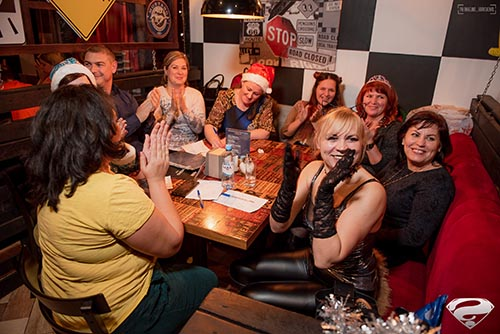
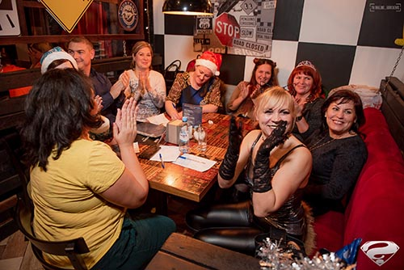

Меня зовут Кравченко Ангелина. Я фотограф из России. Родилась в маленьком, уютном, но скорее
умирающим, застывшим во времени городе Тамбовской области под названием Кирсанов.
Столкновение с миром фотографии произошло как раз в период проживания там. Вся моя жизнь, идеи,
поступки, совершаемые мною-это осознанный путь самоуничтожения. С 3 лет жила без родителей у бабушки
с дедом, в то время, пока они «вставали на ноги» в более большом г. Тамбов... Скорее всего по этой
причине у меня сложились дружеские отношения с ними спустя немалые года.
В силу всех обстоятельств пришлось очень быстро повзрослеть и пойти работать (на самом деле работать
я люблю и сидеть без дела не могу). Проживание с родственниками продлилось не так уж и долго. Я
никогда не хотела зависеть от кого-либо, как говорится: "хочешь жить-умей крутиться и вертеться".
Несмотря на маленький город передо мной всегда стоял выбор между созданием чего-то нового и
продолжением
старого. В большинстве случаев внутренний голос советовал: «не бояться пойти неизведанной дорогой,
но
при этом оставайся собой». Он оказался прав.
Изначально фотография являлась что ни наесть самым не коммерческим занятием-исключительно для души.
Я
всегда хотела увековечить самые искренние моменты и неповторимые мелочи обыденной жизни. Первым моим
зеркальным фотоаппаратом начального уровня являлся всемогущий Nikon D3100. В 2014, начале 2015гг.
первое
предложение снять фоторепортаж поступило от школы №2, в которой я когда-то училась.
Всё произошло внезапно. В 20х числах декабря случайно забежала с фотоаппаратом на школьную
новогоднюю
ночь. Перед финальной частью концерта обнаружили, что фотографически вечер не был запечатлён. В этот
момент преподаватель музыки увидел меня, и я сделала свое первое нажатие на спуск, которое в свою
очередь завершило новогоднюю сказку.
Тамбов встречал меня дружелюбно каждый раз, когда я ехала по ночной трассе с мыслями о Питере. В
2015г.
впервые снимала на рок фестивале "Чернозём" от тамбовского ВГТРК. Переезд в город с замечательной
архитектурой произошёл спонтанно ровно за 13 часов с момента принятого решения летом 2016г. Сама не
знаю, что подвергло меня на данный поступок. Быть может осознание того, что нужно двигаться дальше.
Тамбов за год предоставил море возможностей и самое главное-заставил поверить в себя. В конце 2016г.
среди знакомых начала чётко позиционировать себя фотографом. До 13 мая уже 2017г., мало кто верил
данному утверждению. В этот день я увидела и подала заявку на вакансию фотографа в рекомендательный
портал "LikenGo". Спустя неделю пришёл ответ с предложением попробовать снять репортаж с фестиваля
славянской культуры. Всё прошло отлично. Потенциал, выраженный желанием, страстью и полной отдаче
новому
делу-имелся. Не говоря конечно же о качестве контента, созданного на тот момент.
Май показал, что все слова-всего лишь слова. Людям нужны действия и поступки. Спустя пол месяца
фотосъёмок появились мысли, что снимаю напрасно, но подарил надежду в самый необходимый момент
всероссийский конный сайт, который взял парочку фотографий для статьи. Вывод: всё, что не
делается-всё к
лучшему.
И тут пошло-поехало... Кто бы мог подумать, что с этого всё начнётся. Любой труд стоит многих жертв.
В
конце концов 10.000 часов работы-никто не отменял.
В конце осени 2017г. я поехала в Москву, где каталась на метро, ела шаурму и купила свою любимую
полнокадровую фотокамеру Nikon D750.
Что же будет дальше?
Я обожаю чувствовать жизнь и поэтому могу сказать точно, что останавливаться уже на достигнутом
вовсе не
собираюсь.
Для чего я фотографирую?
Фотографирую ради того, чтобы изменить людей; поменять их мнение, жизнь в лучшую сторону; оставить в
памяти важные моменты; показать мир с обычной, прекрасно-простой точки зрения. Люблю людей и верю,
что
каждый человек способен поменять ход событий мирового масштаба, нужно всего лишь не боятся
продолжить
свой начатый путь.
 
